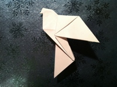
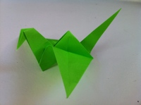
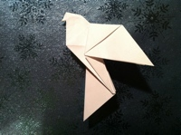
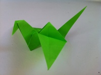

Author : Rusheel Sai Nuthalapati
About Us Follow UsThese origami instructions and diagrams were written to be as easy to follow as possible. I recommend using origami paper if you want them to turn out nice, but regular paper will do fine for simple diagrams.
For those who are unfamiliar with origami, it is the art of folding paper into a sculpture without using glue or scissors. This may seem like a daunting task, but it's entirely possible to fold paper into very sophistocated and beautiful designs.
Most origami instructions and diagrams here will be easy in order to not discourage you, but feel free to tackle the harder ones if you feel daring want some challenge.
There are many shapes to choose from so pick a category from the menu. Once you select a shape, you'll be presented with the origami instructions and diagrams for it. Have fun:)


 




Hope you liked our collection of Origami. We would love to hear new types of origami you have found too. So head to our FOLLOW US tab and email us.
Wanna hear more about us? Head to the ABOUT US tab to know about us.